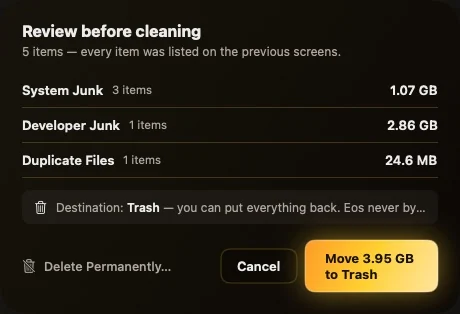

Illustrated guide
How to clear Xcode caches on Mac with Eos
Xcode stores build output, simulator caches and saved archives in different places. Use Eos to see what takes up space, identify files Xcode can rebuild, and review exactly what will go to the Trash.
Which Xcode files should I review?
| What Eos found | What to expect |
|---|---|
| Derived Data | Xcode rebuilds this output. The next build may take longer. |
| Simulator caches | Simulator tools can recreate these. The next launch may take longer. |
| Old device support | Review the supported device and iOS versions before removing older files. |
| Xcode Archives | Archives can contain builds or debug symbols you still need. Eos leaves them unselected by default. |
1. Scan, then open Developer Junk
In Eos, run Smart Scan. In the results, open Developer Junk to see Xcode and other development files grouped by type.
Look for Xcode — Derived Data, Xcode — simulator and old device support. The results depend on the files Eos can scan on your Mac.

2. Choose the files you can rebuild
For a first pass, review Derived Data for a project you can build again. Xcode recreates that output on the next build, which may take longer.
Inspect simulator cache and old device support entries separately. Leave an archive untouched if you need the build or are unsure whether you have another copy.
3. Review the selection and leave the Trash available
Choose Review & Clean and check the selected categories and size. Deselect any item you didn’t intend to include, then use Move to Trash when you’re ready.
Build a project or launch the simulator again before emptying the Trash. Until the Trash is emptied, moving files there may not increase available disk space.
